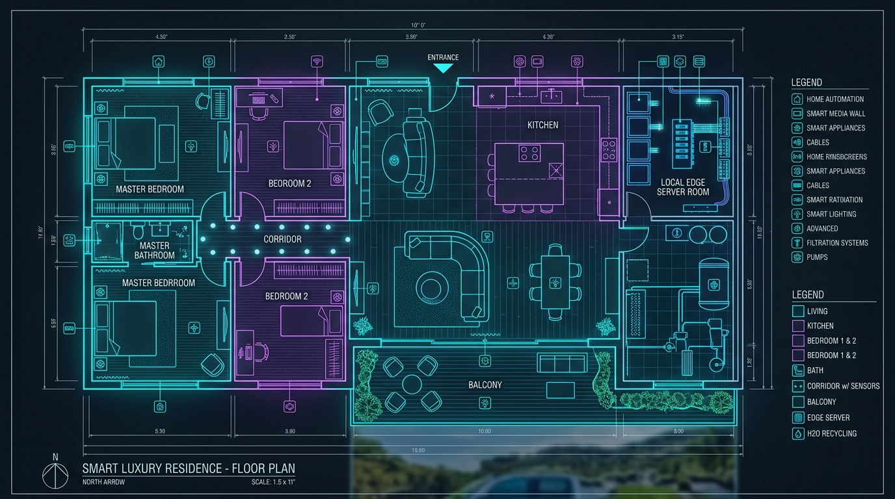

Kuşbakışı Kat Planı & Otonom Ev Yönetimi
Motorlu Kapılar, 25°C İklimlendirme, Alexa Sesli Karşılama ve Gri Su Entegrasyonu
Mimari Kuşbakışı Kat Planı
Canlı Görsel İkiz
Motorlu Kapı & 3'lü İklim Kontrolü
Odaların Motorlu Otomatik Kapıları:
3'lü Entegre Isıtma / Soğutma Sistemi:
Sürdürülebilir Evsel Su Arıtma & Geri Dönüşüm Entegrasyonu
Önceki projeniz olan evsel gri su ve yarı-gri su arıtma sisteminin akıllı ev otomasyonuna tam entegre olmuş hali.
4 Aşamalı Su Geri Dönüşüm Süreci
%80.2 VerimlilikMusluk, duş (Gri Su) ve Çamaşır/Bulaşık makinesi (Yarı-Gri Su) ayrı kanallardan toplanır.
Saç, deterjan tortusu ve büyük partiküller aktif karbon yataktan geçirilir.
Bakteri ve kimyasallar %99.4 oranında temizlenir.
Arıtılan su otomatik olarak klozet rezervuarlarına ve balkon/bahçe sulama tesisatına basılır.
Su Kullanım Oranları Grafiği
Evin İçindeki Sunucuda Çalışan Yerel AI Asistanı
İnternete ihtiyaç duymadan, mahremiyetinizi koruyarak evdeki verileri analiz eden ve tavsiyeler üreten yapay zeka.
Akıllı Ev Sunucusu Tavsiye Akışı
Gerçek Zamanlı AI ÖnerileriBugün bulaşık makinesinden 48 Litre yarı-gri su toplandı. Filtreleme sonrası klozet rezervuarına aktarıldı. %22 tasarruf sağlandı!
Yatak odası 19.5°C'den 25°C'ye çıkarılırken önce Alttan Isıtma, ardından Inverter Klima eko-modda çalıştırıldı. Elektrik tüketimi %18 düşürüldü.
Gece koridorda hareket algılandı. Gözü almayan %5 parlaklıkta rehber LED'ler otomatik açıldı.
Yerel AI Asistanı İle Sohbet & Komut
Local LLM ChatElektrik Tüketim Analizi & Güvenlik Paneli
Koridor hareket sensörleri, otomatik alarm sistemi ve anlık elektrik güç dağılımı.
Anlık Elektrik Güç Dağılımı (kW)
Ev Güvenlik & Hareket Tespiti
Proje İlerleme Durumu: %75 TAMAMLANDI
Fazlar Halinde Gelişim Haritası, Matematiksel Formüller ve Kolay Fizik Modelleri
Konsept, Kat Planı & Arayüz
Oda bazlı otonomi, kuşbakışı kat planı, motorlu kapılar, 25°C iklim preset ve su dönüşüm paneli.
Matematik & Sunum Rehberi
Isı transfer denklemi (MPC), Oyun Teorisi (CNP pazarlık), Su kütle dengesi ve jüri Soru-Cevap notları.
Yerel Sunucu Backend Kodu
Raspberry Pi / Mini PC için hazır Python MQTT mesajlaşma ve Yerel AI (Ollama Llama-3) sunucu kütüphanesi.
Maket Ev & ESP32 Donanım
500-1000 TL bütçeli Karton/Akrilik maket ev planı, ucuz ESP32 ($4) mikrodenetleyici ve sensör devre şemaları.
1. Termal Model & Isı Transfer Denklemi
Neden Gerekli? Odayı 25°C yapmak için klimayı sonuna kadar açmak elektriği israf eder. Isı transfer denklemi odanın soğuma hızını hesaplayan "akıllı hava durumu formülüdür".
Gerekli Güç = Oda Hacmi × (25°C - Dış Sıcaklık) × Yalıtım KatsayısıKlima %30, alttan ısıtma %50 çalışarak 25°C'ye en düşük elektrik faturasıyla ulaşılır.
2. Oyun Teorisi (Odalar Arası Pazarlık)
Neden Gerekli? Mutfak fırını, yatak odası kliması ve banyo ısıtıcısı aynı anda çalışırsa sigorta atar! Oyun teorisi odaların birbiriyle elektrik pazarlığı yapmasını sağlar.
3. Su Arıtma Kütle Dengesi & Kimyasal Formül
Toplam Arıtılan Su = Gri Su (Duş/Lavabo) + Yarı-Gri Su (Makine) - Tortu KaybıTemiz Su Saflığı (TDS) = Giriş Kirliliği × (1 - Filtre Verimi %80.2)Banyodan çıkan 100L suyun 80.2 Litresi klozet rezervuarında ve bahçede sıfır maliyetle tekrar kullanılır.